Teaching
Support the Lesson
Use visuals alongside the workbook and Leader Sheets to reinforce key theological themes.
Teaching graphics for The Church Explored
These visual resources are designed to help pastors, teachers, small groups, youth workers, and students understand the structure, worship, mission, fellowship, and covenant life of the church more clearly.

These visuals simplify complex ideas while keeping Christ and Scripture central.
Use these graphics in sermons, classes, small groups, discipleship, youth ministry, presentations, printouts, or social sharing.
Use visuals alongside the workbook and Leader Sheets to reinforce key theological themes.
Charts and diagrams help groups visualize abstract concepts and relationships.
Strong visual structure helps students retain and revisit key truths more effectively.
Click any thumbnail to open the full-size graphic.
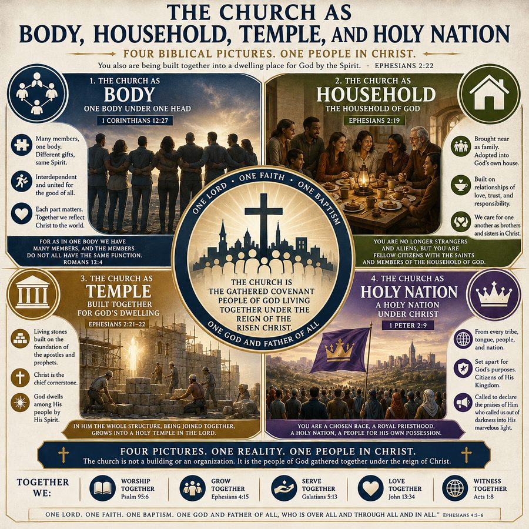
Explores the church as body, household, temple, and holy nation.
Open Graphic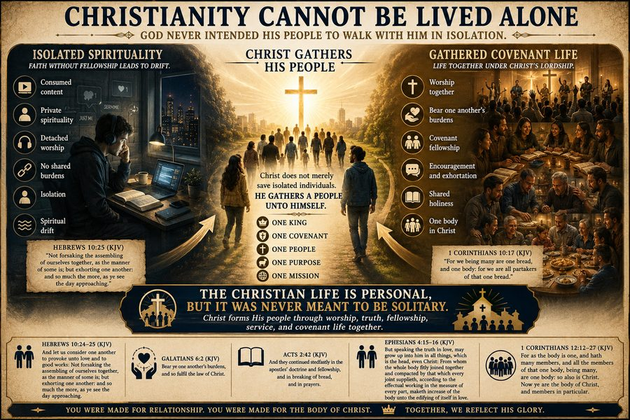
Illustrates why embodied fellowship and gathered church life matter.
Open Graphic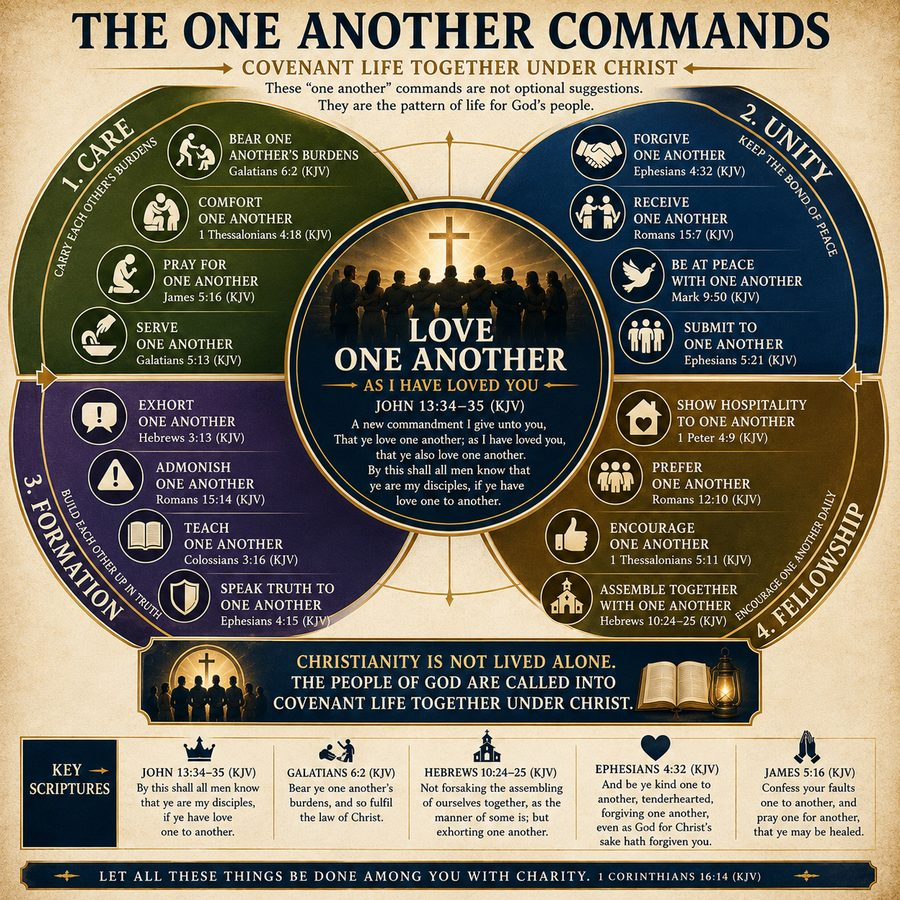
Visualizes mutual care, encouragement, service, forgiveness, and burden-bearing.
Open Graphic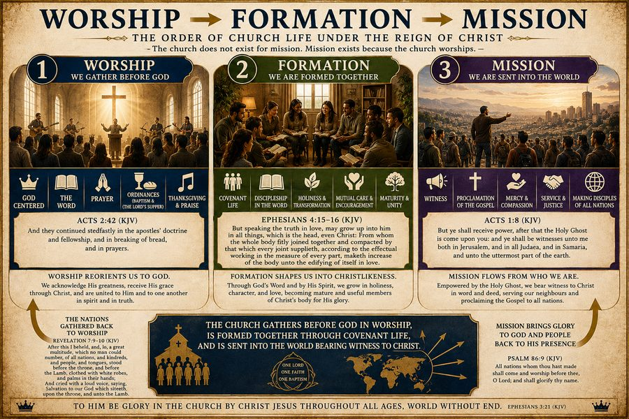
Shows how worship forms the church and sends the church outward in witness.
Open Graphic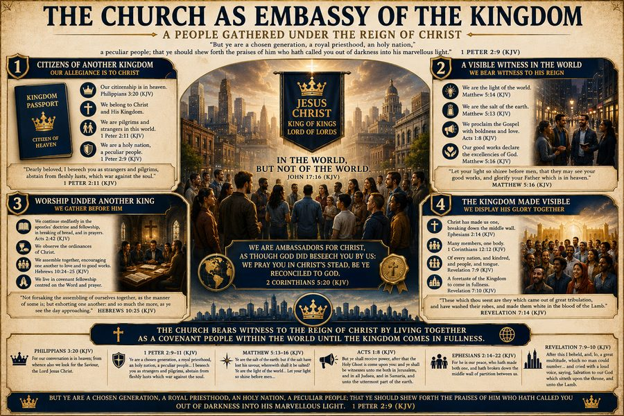
The church as a visible outpost of Christ’s Kingdom in the present world.
Open Graphic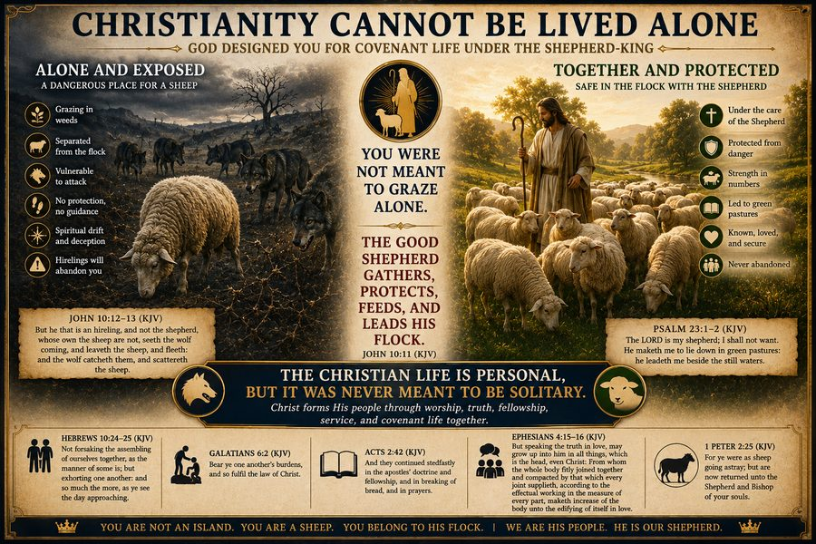
A pastoral picture of why believers need embodied church life.
Open Graphic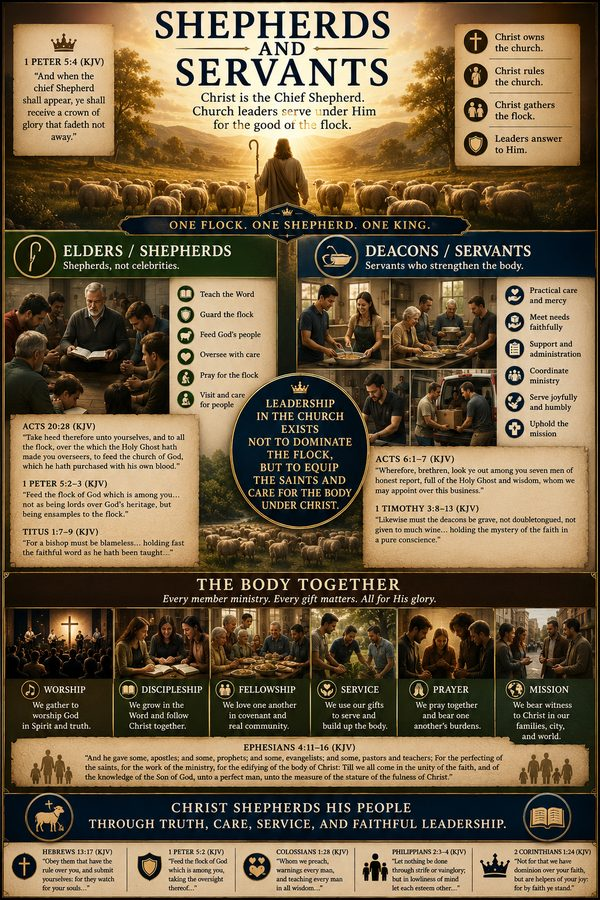
Contrasts worldly leadership with Christlike shepherding and service.
Open Graphic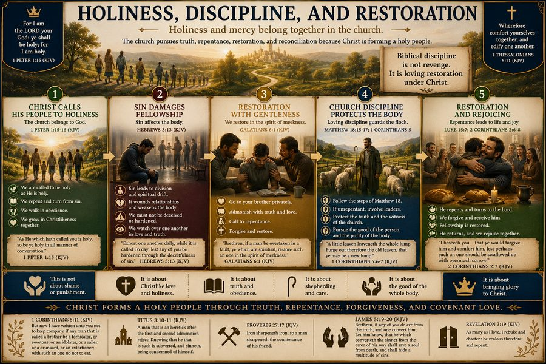
Shows the relationship between holiness, correction, grace, and restoration.
Open Graphic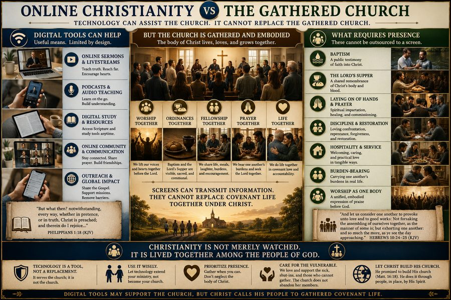
Illustrates the difference between digital access and embodied covenant life.
Open Graphic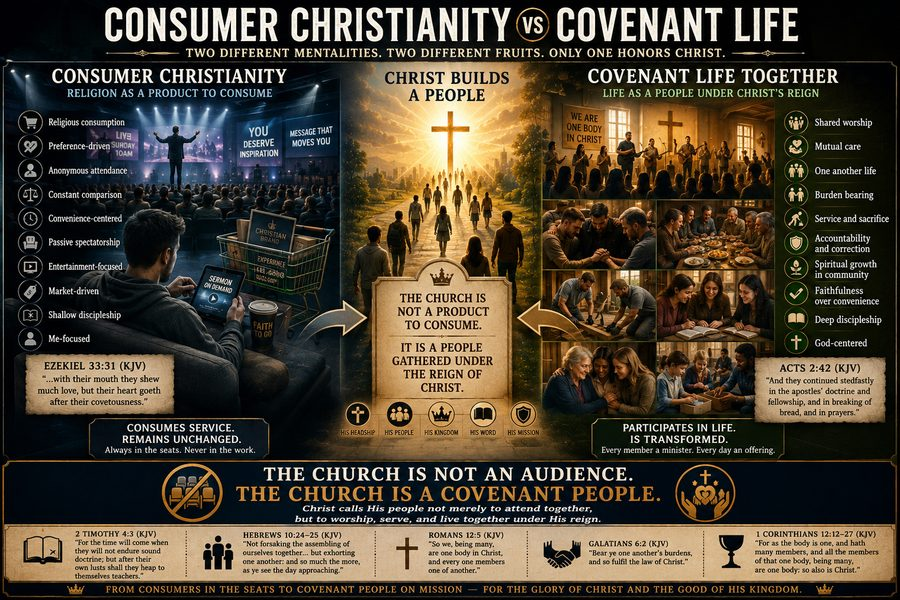
Contrasts passive religious consumption with active covenant participation.
Open Graphic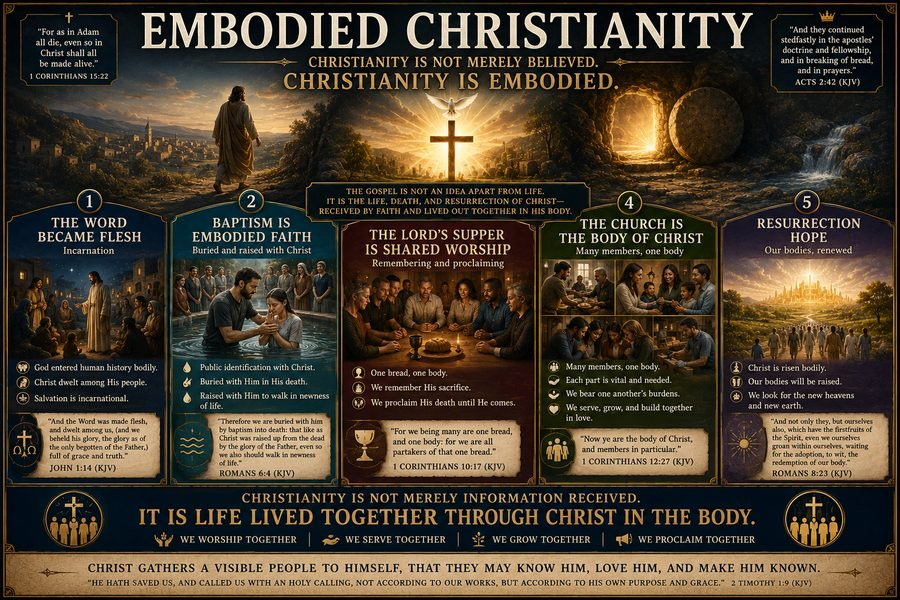
Shows why Christian life is lived through real presence, relationships, and shared worship.
Open Graphic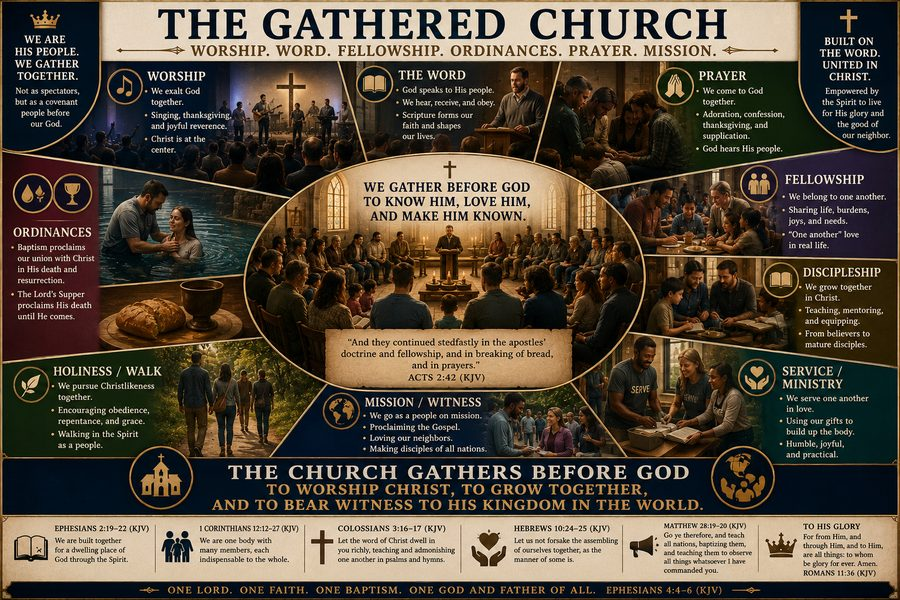
A companion visual emphasizing presence, participation, and shared life in Christ.
Open GraphicThese visuals were designed to function as flexible teaching infrastructure.
Display graphics during teaching or discussion to reinforce lesson structure.
Use visuals as discussion starters or weekly review tools for groups.
Pair visuals with youth leader guides and handouts to reinforce core truths.
The Visual Theology graphics are designed to work together with the workbook, articles, handouts, and Leader Sheets.
The main doctrinal and structural study guide for RC2.
Workbook and HandoutsUse the Leader Sheets to structure classroom discussion and presentation.
View Leader SheetsYouth-friendly leader guides and student handouts for a 12-session track.
View Youth ResourcesThese graphics help believers see the structure, purpose, worship, fellowship, mission, and hope of Christ’s gathered people more clearly.
{kind=link}
{kind=link}
{kind=link}
{kind=link}
{kind=link}
{kind=link}
{kind=link}
{kind=link}
{kind=link}
{kind=link}
{kind=link}
{kind=link}